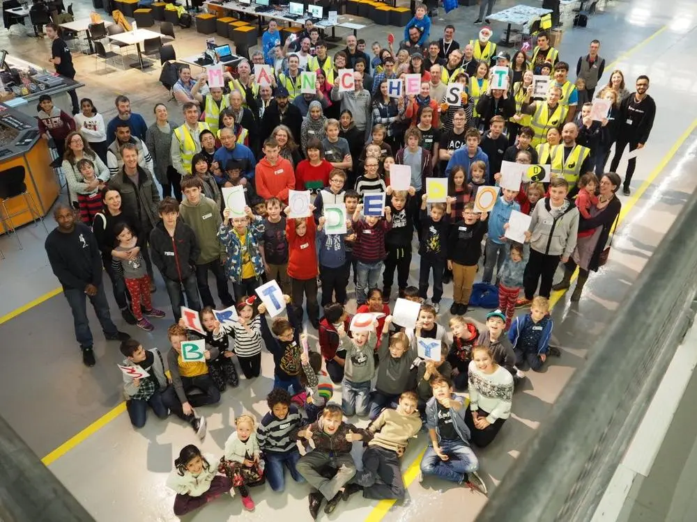
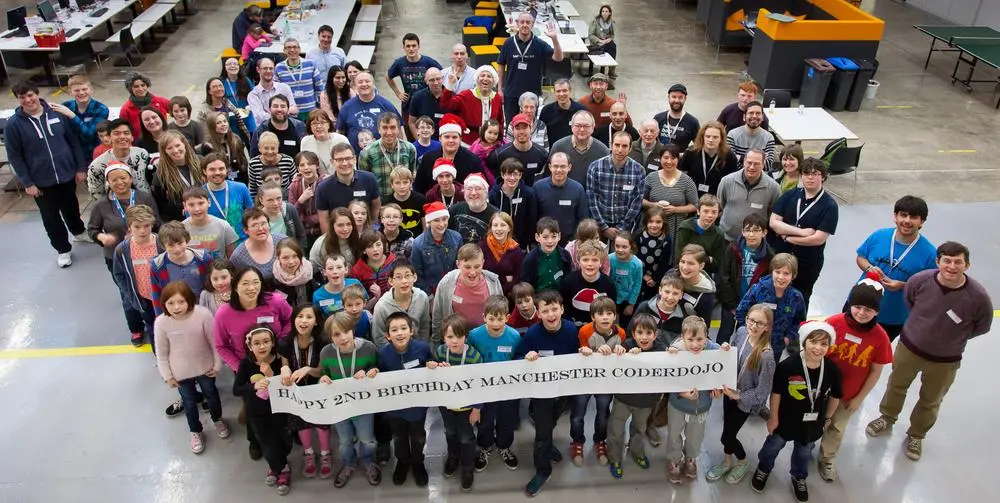
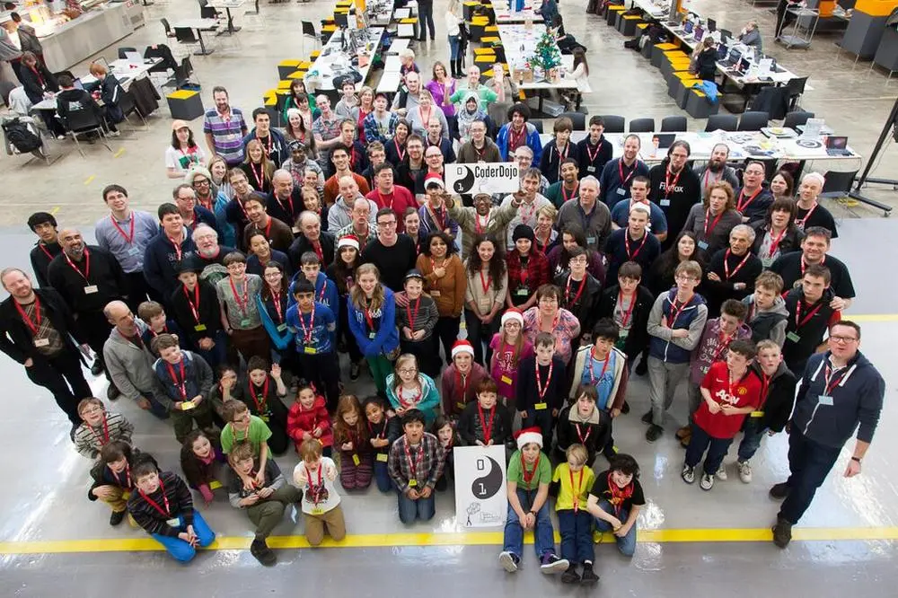

We celebrated three years of Manchester CoderDojo in December 2015. So – we took our “traditionally” photo, which sits alongside our previous two. See if you can spot yourself!

3rd birthday

2nd birthday

1st birtthday